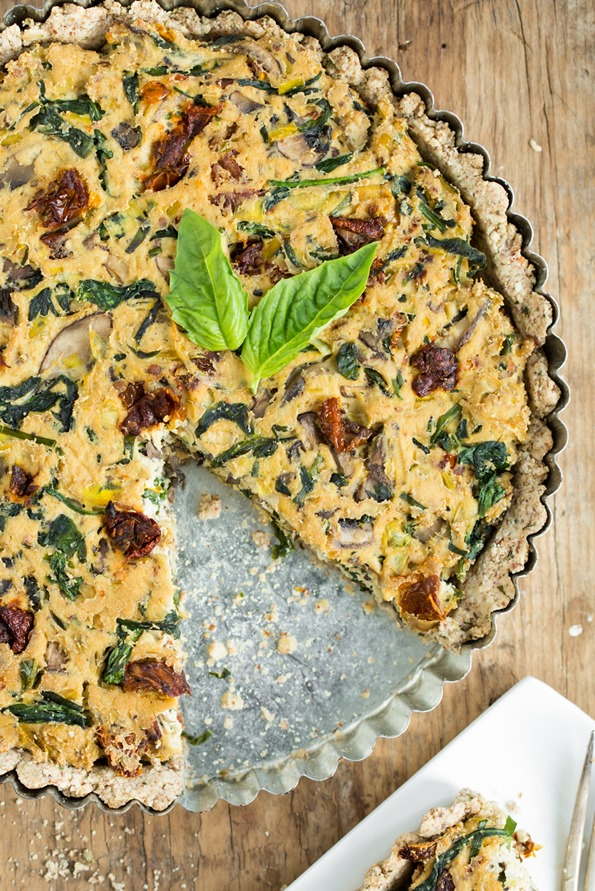

Sun-Dried Tomato, Mushroom, And Spinach Quiche
Quiche is one of the most underrated breakfast dishes. There are so many toppings that can be added to create a breakfast master piece. This easy to follow recipe will be a crowd pleaser for all. 
Ingredients for crust and quiche
- 1 tablespoon ground flax + 3 tablespoons water, mixed together
- 1 cup whole almonds, ground into flour
- 1 cup of hearty oats, ground into flour
- teaspoon dried parsley>
- 1 teaspoon dried oregano
- 1/2 tsp kosher salt
- 1 tbsp olive oil
- 1-2.5 tbsp water, as needed
- 1 block (14-oz) firm tofu
- 4 strips of bacon
- 1/2 cup cubed ham
- 1 leek or yellow onion, thinly sliced
- 3 large garlic cloves, minced
- 3 cups (8-oz) sliced cremini mushrooms
- 1/2 cup fresh chives, finely chopped
- 1/2 cup fresh basil leaves, finely chopped
- 1/3 cup oil-packed sun-dried tomatoes, finely chopped
- 1 cup baby spinach
- 2 tbsp yeast
- 1 teaspoon dried oregano
- 3/4-1 teaspoon fine grain sea salt
- Baking dish
- Skillet
- Food Processor
- Preheat oven to 350. Grease a round 10-inch tart pan with oil.
- For the crust: Whisk together flax and water mixture in a small bowl and set aside.
- In a large bowl, stir together the almond meal, oat flour (or buckwheat flour), parsley, oregano, and salt.
- Add in the flax mixture and oil. Stir until it looks as though it is all combined, adding the remaining water until the dough is sticky … kinda like cookie dough! The dough should stick together when you press it between your fingers.
- Spread the dough over the base of the dish. Press the mixture evenly into the pan, working your way outward and up the sides of the pan. Poke a few fork holes in the dough so its breathable
- Bake the crust at 350F for 13-16 minutes, allow to cool after.
- For the filling:
- In a skillet, add oil and saute the onion and garlic over medium heat for a few minutes.
- Stir in the mushrooms, add salt, and cook on medium-high heat for about 10-12 minutes.
- Stir in the herbs, sun-dried tomatoes, spinach, yeast, oregano, salt, pepper, and red pepper flakes until combined. Cook until the spinach is wilted.
- Stir in bacon and cubed ham
- Remove the skillet from the heat
- Add filling to baked crust
- Bake quiche at 375 for about 30-35 minutes
- Let quiche sit for 10 minutes to cool
- Serve and Enjoy :)